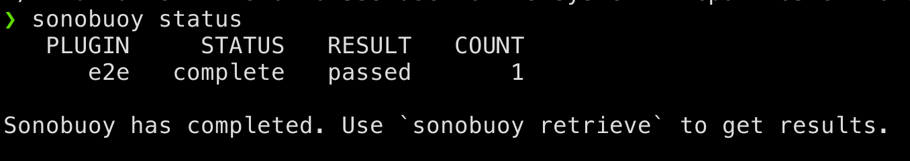

Contributing to Kubernetes Conformance Coverage
ii
Created: 2021-03-26 Fri 11:09
About ii
Technical Folks in New Zealand
- Focus on Cooperative Coding
- Pairing is Sharing
- ii.coop
People
- Hippie Hacker
- Caleb Woodbine
- Zach Mandeville
- Stephen Heywood
- Berno Kleinhans
- Riaan Kleinhans
- Brenda Peel
Kubernetes Conformance
What is Kubernetes Conformance?
CNCF Kubernetes Conformance ensures
… that every vendor’s version of Kubernetes supports the required APIs, as do open source community versions
Why is Kubernetes Conformance important?
- portability of workloads
- stable APIs behave the same everywhere
- freedom from vendor lock-in
- consistency with APIs
Conformance website

Who can meet your k8spectations?
Currently, there are ~67 certified distributions.
Click Certified K8s/KCSP/KTP link on the left

k8s-conformance repo
github.com/cncf/k8s-conformance

Conformance as Code
- defined through the API and a test suite
- allows for tools to be built that fit within k8s workflows
- two examples: Sonobuoy and APISnoop
Certifying Disbributions with Sonobuoy
Deploy Sonobuoy
Build sonobuoy
go get -u -v github.com/vmware-tanzu/sonobuoy
deploy to your cluster
sonobuoy run --mode=certified-conformance
view test logs
sonobuoy logs

Check if sonobuoy is done
Check status, and look for complete
sonobuoy status

Get Results
outfile=$(sonobuoy retrieve)
mkdir ./results; tar xzf $outfile -C ./results
./results/global
./results/global/junit_01.xml
./results/global/e2e.log
Submit PR
- fork k8s conformance repo and open PR
- In PR, include output logs and a product.yaml file
- Complete instructions at github.com/cncf/k8s-conformance
Example Pull Request

Files Changed

Improving Conformance Coverage with APISnoop
Goals
APISnoop is designed to help:
- Identify gaps in coverage
- Close these gaps with tests
- Prevent new gaps from happening
snoopDB
- decoupled postgres database
- powers each form of APISnoop
- populated with:
- api schema from k/k swagger.json
- audit events from CI job api-audit.logs
- live audit events from cluster
Identifying Gaps
apisnoop.cncf.io

Closing gaps in Kubernetes Conformance Coverage
DEMO
Preventing gaps in Kubernetes Conformance Coverage
testgrid.k8s.io

sig-arch / conformance prow jobs
kubernetes/test-infra config/jobs/kubernetes/sig-arch

apisnoop-conformance-gate
Eventually Release Blocking Conformance Job

Job Fails and Emails
Any new gaps in coverage are detected
name: apisnoop-conformance-gate
annotations:
testgrid-dashboards: sig-arch-conformance
testgrid-tab-name: apisnoop-conformance-gate
test-grid-alert-email: kubernetes-sig-arch-conformance-test-failures@googlegroups.com
testgrid-num-failures-to-alert: '1'
description: 'Uses APISnoop to check that new GA endpoints are conformance tested in latest e2e test run'
Summary
To reduce gaps in Kubernetes Conformance Coverage
- Identify
- using apisnoop.cncf.io + snoopdb
- Close
- Write and promote tests
- Prevent
- Release blocking jobs
Verifying Conformance Submissons
Results submitted

CNCF CI comments

Informational labels

Certified distributions

Certified Logo (tm)